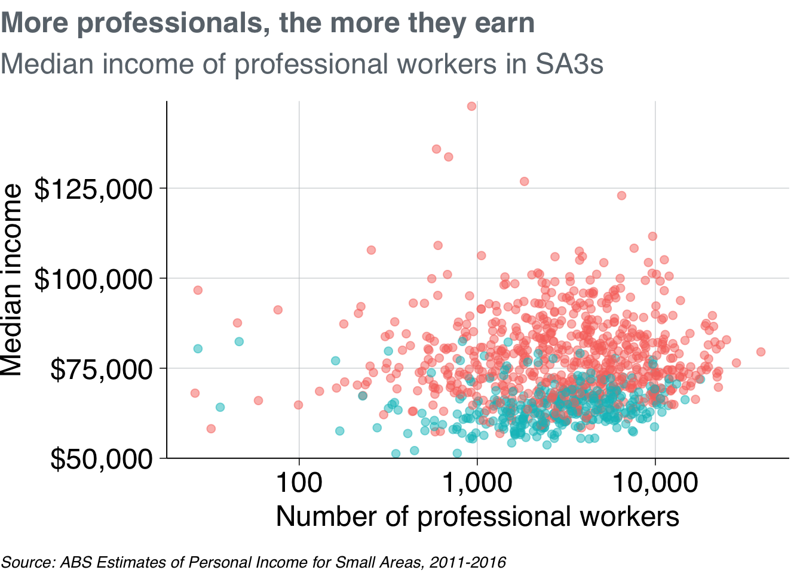
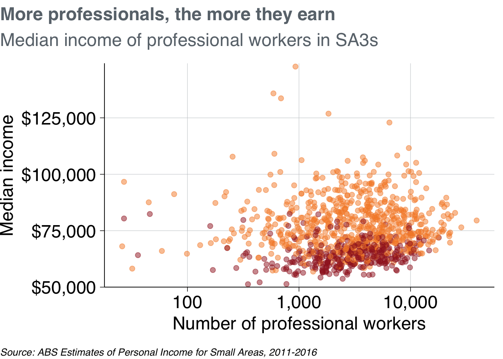

5 Data Visualisation
[intro]
5.1 Set-up and packages
This section uses the package ggplot2 to visualise data, and dplyr functions to manipulate data. Both of these packages are loaded with tidyverse. The scales package helps with labelling your axes.
The grattantheme package is used to make charts look Grattan-y. The absmapsdata package is used to help make maps.
For most charts in this chapter, we’ll use the population_table data summarised here. It contains the population in each state between 2013 and 2018:
population_table <- read_csv("data/population_sa4.csv") %>%
filter(data_item == "Persons - Total (no.)") %>%
mutate(pop = as.numeric(value),
year = as.factor(year)) %>%
group_by(year, state) %>%
summarise(pop = sum(pop))
# Show the first six rows of the new dataset
head(population_table)## # A tibble: 6 x 3
## # Groups: year [1]
## year state pop
## <fct> <chr> <dbl>
## 1 2013 Australian Capital Territory 383257
## 2 2013 New South Wales 7404032
## 3 2013 Northern Territory 241722
## 4 2013 Other Territories 2962
## 5 2013 Queensland 4652824
## 6 2013 South Australia 16714885.2 Concepts
The ggplot2 package is based on the grammar of graphics. …
The main ingredients to a ggplot chart:
- Data: what data should be plotted. e.g.
data - Aesthetics: what variables should be linked to what chart elements. e.g.
aes(x = population, y = age)to connect thepopulationvariable to thexaxis, and theagevariable to theyaxis. - Geoms: how the data should be plotted. e.g.
geom_point()will produce a scatter plot,geom_colwill produce a column chart.
Each plot you make will be made up of these three elements. The full list of standard geoms is listed in the tidyverse documentation.
ggplot(data = <DATA>) +
<GEOM_FUNCTION>(
mapping = aes(<MAPPINGS>),
stat = <STAT>,
position = <POSITION>
) +
<COORDINATE_FUNCTION> +
<FACET_FUNCTION>For example, you can plot a column chart by passing the population_table dataset into ggplot() (“make a chart wth this data”). This produces an empty plot:

Next, set the aes (aesthetics) to x = state (“make the x-axis represent state”), y = pop (“the y-axis should represent population”), and fill = year (“the fill colour represents year”). Now ggplot knows where things should go:{r empty with aes} population_table %>% ggplot(aes(x = state, y = pop, fill = year))
Now that ggplot knows where things should go, it needs to how to plot them. For this we use geoms. Tell it to plot a column chart by using geom_col:

Great! Although stacking populations is a bit silly. You can adjust the way geoms work with arguments. In this case, tell it to place the different categories next to each other rather than ontop of each other using position = "dodge":

That’s nicer. The following sections in this chapter will build on this chart. The rest of the chapter will explore:
- Grattanising your charts and choosing colours
- Saving charts according to Grattan templates
- Making bar, line, scatter and distribution plots
- Making maps and interactive charts
- Adding chart labels
5.3 Making Grattan-y charts
The grattantheme package contains functions that help Grattanise your charts. It is hosted here: https://github.com/mattcowgill/grattantheme
You can install it with devtools::install_github from the package:
The key functions of grattantheme are:
theme_grattan: set size, font and colour defaults that adhere to the Grattan style guide.grattan_y_continuous: sets the right defaults for a continuous y-axis.grattan_colour_continuous: pulls colours from the Grattan colour palete forcolouraesthetics.grattan_fill_continuous: pulls colours from the Grattan colour palete forfillaesthetics.grattan_save: a save function that exports charts in correct report or presentation dimensions.
This section will run through some examples of Grattanising charts. The ggplot functions are explored in more detail in the next section.
5.3.1 Making Grattan charts
Start with a column chart, similar to the one made above:
base_chart <- population_table %>%
ggplot(aes(x = state,
y = pop,
fill = year)) +
geom_col(position = "dodge") +
labs(x = "",
title = "NSW and Victoria are booming",
subtitle = "Population by state, 2013-2018",
caption = "Source: ABS Regional Dataset (2019)")
base_chart
Let’s make it Grattany. First, add theme_grattan to your plot:
Then grattan_y_continuous to align the x-axis with zero. This function takes the same arguments as scale_y_continuous, so you can add labels = comma() to reformat the y-axis labels:

To define fill colours, use grattan_fill_manual with the number of colours you need (six, in this case):
pop_chart <- base_chart +
theme_grattan() +
grattan_y_continuous(labels = comma) +
grattan_fill_manual(6)
pop_chart
Nice chart! Now you can save it and share it with the world.
5.3.2 Saving Grattan charts
The grattan_save function saves your charts according to Grattan templates. It takes these arguments:
filename: the path, name and file-type of your saved chart. eg:"atlas/population_chart.pdf".object: the R object that you want to save. eg:pop_chart. If left blank, it grabs the last chart that was displayed.type: the Grattan template to be used. This is one of:"normal"The default. Use for normal Grattan report charts, or to paste into a 4:3 Powerpoint slide. Width: 22.2cm, height: 14.5cm."normal_169"Only useful for pasting into a 16:9 format Grattan Powerpoint slide. Width: 30cm, height: 14.5cm."tiny"Fills the width of a column in a Grattan report, but is shorter than usual. Width: 22.2cm, height: 11.1cm."wholecolumn"Takes up a whole column in a Grattan report. Width: 22.2cm, height: 22.2cm."fullpage"Fills a whole page of a Grattan report. Width: 44.3cm, height: 22.2cm."fullslide"Creates an image that looks like a 4:3 Grattan Powerpoint slide, complete with logo. Width: 25.4cm, height: 19.0cm."fullslide_169"Creates` an image that looks like a 16:9 Grattan Powerpoint slide, complete with logo. Use this to drop into standard presentations. Width: 33.9cm, height: 19.0cm"blog"Creates a 4:3 image that looks like a Grattan Powerpoint slide, but with less border whitespace than ‘fullslide’.""fullslide_44" Createsan image that looks like a 4:4 Grattan Powerpoint slide. This may be useful for taller charts for the Grattan blog; not useful for any other purpose. Width: 25.4cm, height: 25.4cm.- Set
type = "all"to save your chart in all available sizes.
height: override the height set bytype. This can be useful for really long charts in blogposts.save_data: exports acsvfile containing the data used in the chart.force_labs: override the removal of labels for a particulartype. egforce_labs = TRUEwill keep the y-axis label.
To save the pop_chart plot created above as a whole-column chart for a report:

To save it as a presentation slide instead, use type = "fullslide":

Or, if you want to emphasise the point in a really tall chart for a blogpost, you can use type = "blog" and adjust the height to be 50cm. Also note that because this is for the blog, you should save it as a png file:

And that’s it! The following sections will go into more detail about different chart types in R, but you’ll mostly use the same basic grattantheme formatting you’ve used here.
5.4 Chart cookbook
This section takes you through a few often-used chart types.
5.4.1 Bar charts
Bar charts are made with geom_bar or geom_col. Creating a bar chart will look something like this:
ggplot(data = <data>) +
geom_bar(aes(x = <xvar>, y = <yvar>),
stat = <STAT>,
position = <POSITION>
)It has two key arguments: stat and position.
First, stat defines what kind of operation the function will do on the dataset before plotting. Some options are:
"count", the default: count the number of observations in a particular group, and plot that number. This is useful when you’re using microdata. When this is the case, there is no need for ayaesthetic."sum": sum the values of theyaesthetic."identity": directly report the values of theyaesthetic. This is how Powerpoint and Excel charts work.
You can use geom_col instead, as a shortcut for geom_bar(stat = "identity).
Second, position, dictates how multiple bars occupying the same x-axis position will positioned. The options are:
"stack", the default: bars in the same group are stacked atop one another."dodge": bars in the same group are positioned next to one another."fill": bars in the same group are stacked and all fill to 100 per cent.
population_table %>%
ggplot(aes(x = state,
y = pop,
fill = year)) +
geom_bar(stat = "identity",
position = "dodge") +
theme_grattan() +
grattan_y_continuous(labels = comma) +
grattan_fill_manual(6)
You can also order the groups in your chart by a variable. If you want to order states by population, use reorder inside aes:
population_table %>%
ggplot(aes(x = reorder(state, -pop), # reorder state by negative population
y = pop,
fill = year)) +
geom_bar(stat = "identity",
position = "dodge") +
theme_grattan() +
grattan_y_continuous(labels = comma) +
grattan_fill_manual(6) +
labs(x = "")
To flip the chart – a useful move when you have long labels – add coord_flipped (ie ‘flip coordinates’) and tell theme_grattan that the plot is flipped using flipped = TRUE.
population_table %>%
ggplot(aes(x = reorder(state, -pop),
y = pop,
fill = year)) +
geom_bar(stat = "identity",
position = "dodge") +
coord_flip() + # flip the coordinates
theme_grattan(flipped = TRUE) + # tell theme_grattan
grattan_y_continuous(labels = comma) +
grattan_fill_manual(6) +
labs(x = "")
5.4.2 Line charts
A line chart has one key aesthetic: group. This tells ggplot how to connect individual lines.
population_table %>%
ggplot(aes(x = year,
y = pop,
colour = state,
group = state)) +
geom_line() +
theme_grattan() +
grattan_y_continuous(labels = comma) +
grattan_colour_manual(9) +
labs(x = "")## Warning in grattantheme::grattan_pal(n = n, reverse = reverse, faded =
## faded): Using more than six colours is not recommended.
You can also add dots for each year by layering geom_point on top of geom_line:
population_table %>%
ggplot(aes(x = year,
y = pop,
colour = state,
group = state)) +
geom_line() +
geom_point(size = 2) +
theme_grattan() +
grattan_y_continuous(labels = comma) +
grattan_colour_manual(9) +
labs(x = "")## Warning in grattantheme::grattan_pal(n = n, reverse = reverse, faded =
## faded): Using more than six colours is not recommended.
If you wanted to show each state individually, you could facet your chart so that a separate plot was produced for each state:
population_table %>%
filter(state != "ACT",
state != "NT") %>%
ggplot(aes(x = year,
y = pop,
group = state)) +
geom_line() +
geom_point(size = 2) +
theme_grattan() +
grattan_y_continuous() +
facet_wrap(state ~ .) +
labs(x = "")
To tidy this up, we can:
- shorten the years to be “13”, “14”, etc instead of “2013”, “2014”, etc (via the
xaesthetic) - shorten the y-axis labels to “millions” (via the
yaesthetic) - add a black horizontal line at the bottom of each facet
- give the facets a bit of room by adjusting
panel.spacing - define our own x-axis label breaks to just show
13,15and17
population_table %>%
filter(state != "ACT",
state != "NT") %>%
ggplot(aes(x = substr(year, 3, 4), # 1: just take the last two characters
y = pop / 1e6, # 2: divide population by one million
group = state)) +
geom_line() +
geom_point(size = 2) +
geom_hline(yintercept = 0) + # 3: add horizontal line at the bottom
theme_grattan() +
theme(panel.spacing = unit(10, "mm")) + # 4: add panel spacing
grattan_y_continuous(labels = comma) +
scale_x_discrete(breaks = c("13", "15", "17")) + # 5: define our own label breaks
facet_wrap(state ~ .) +
labs(x = "")
5.4.3 Scatter plots
Scatter plots require x and y aesthetics. These can then be coloured and facetted.
First, create a dataset that we’ll use for scatter plots. Take the population_table dataset and transform it to have one variable for population in 2013, and another for population in 2018:
population_diff <- read_csv("data/population_sa4.csv") %>%
mutate(state_long = state,
state = strayr::strayr(state_long),
pop = as.numeric(value),
year = as.factor(glue::glue("y{year}"))) %>%
filter(year %in% c("y2013", "y2018"),
data_item == "Persons - Total (no.)",
sa4_name != "Other Territories") %>%
group_by(year, state, sa4_name) %>%
summarise(pop = sum(pop)) %>%
spread(year, pop) %>%
mutate(pop_change = 100 * (y2018 / y2013 - 1))population_diff %>%
ggplot(aes(x = y2013/1000,
y = pop_change)) +
geom_point(size = 4) +
theme_grattan() +
theme(axis.title.y = element_text(angle = 90)) +
grattan_y_continuous() +
labs(y = "Population increase to 2018, per cent",
x = "Population in 2013, thousands")
It looks like the areas with the largest population grew the most between 2013 and 2018. To explore the relationship further, you can add a line-of-best-fit with geom_smooth:
population_diff %>%
ggplot(aes(x = y2013/1000, # display the x-axis as thousands
y = pop_change)) +
geom_point(size = 4) +
geom_smooth() +
geom_hline(yintercept = 0) +
theme_grattan() +
theme(axis.title.y = element_text(angle = 90)) +
grattan_y_continuous() +
labs(y = "Population increase to 2018, per cent",
x = "Population in 2013, thousands")
You could colour-code positive and negative changes from within the geom_point aesthetic. Making a change there won’t pass through to the geom_smooth aesthetic, so your line-of-best-fit will apply to all data points.
population_diff %>%
ggplot(aes(x = y2013/1000, # display the x-axis as thousands
y = pop_change)) +
geom_point(aes(colour = pop_change < 0),
size = 4) +
geom_smooth() +
geom_hline(yintercept = 0) +
theme_grattan() +
theme(axis.title.y = element_text(angle = 90)) +
grattan_y_continuous() +
grattan_colour_manual(2) +
labs(y = "Population increase to 2018, per cent",
x = "Population in 2013, thousands")
Like the charts above, you could facet this by state to see if there were any interesting patterns. We’ll filter out ACT and NT because they only have one and two data points (SA4s) in them, respectively.
population_diff %>%
filter(state != "ACT",
state != "NT") %>%
ggplot(aes(x = y2013/1000, # display the x-axis as thousands
y = pop_change)) +
geom_point(aes(colour = pop_change < 0),
size = 2) +
geom_smooth() +
geom_hline(yintercept = 0) +
theme_grattan() +
theme(axis.title.y = element_text(angle = 90)) +
grattan_y_continuous() +
grattan_colour_manual(2) +
labs(y = "Population increase to 2018, per cent",
x = "Population in 2013, thousands") +
facet_wrap(state ~ .)
5.4.4 Distributions
geom_histogram
geom_density
ggridges::
5.4.5 Maps
5.4.5.1 sf objects
[what is]
5.4.5.2 Using absmapsdata
The absmapsdata contains compressed, and tidied sf objects containing geometric information about ABS data structures. The included objects are:
- Statistical Area 1 2011:
sa12011 - Statistical Area 1 2016:
sa12016 - Statistical Area 2 2011:
sa22011 - Statistical Area 2 2016:
sa22016 - Statistical Area 3 2011:
sa32011 - Statistical Area 3 2016:
sa32016 - Statistical Area 4 2011:
sa42011 - Statistical Area 4 2016:
sa42016 - Greater Capital Cities 2011:
gcc2011 - Greater Capital Cities 2016:
gcc2016 - Remoteness Areas 2011:
ra2011 - Remoteness Areas 2016:
ra2016 - State 2011:
state2011 - State 2016:
state2016 - Commonwealth Electoral Divisions 2018:
ced2018 - State Electoral Divisions 2018:
sed2018 - Local Government Areas 2016:
lga2016 - Local Government Areas 2018:
lga2018
You can install the package from Github. You will also need the sf package installed to handle the sf objects.
5.4.5.3 Making choropleth maps
Choropleth maps break an area into ‘bits’, and colours each ‘bit’ according to a variable.
SA4 is the largest non-state statistical area in the ABS ASGS standard.
You can join the sf objects from absmapsdata to your dataset using left_join. The variable names might be different – eg sa4_name compared to sa4_name_2016 – so use the by function to match them.
map_data <- population_diff %>%
left_join(sa42016, by = c("sa4_name" = "sa4_name_2016"))
head(map_data %>%
select(sa4_name, geometry))## # A tibble: 6 x 3
## # Groups: state [2]
## state sa4_name geometry
## <chr> <chr> <MULTIPOLYGON [°]>
## 1 ACT Australian Capita… (((148.8041 -35.71402, 148.8018 -35.7121, 148.7…
## 2 NSW Capital Region (((150.3113 -35.66588, 150.3126 -35.66814, 150.…
## 3 NSW Central Coast (((151.315 -33.55582, 151.3159 -33.55503, 151.3…
## 4 NSW Central West (((150.6107 -33.06614, 150.6117 -33.07051, 150.…
## 5 NSW Coffs Harbour - G… (((153.2785 -29.91874, 153.2773 -29.92067, 153.…
## 6 NSW Far West and Orana (((150.1106 -31.74613, 150.1103 -31.74892, 150.…You then plot a map like you would any other ggplot: provide your data, choose your aes and your geom. For maps with sf objects, the key aesthetic is geometry = geometry, and the geom is geom_sf.
map <- map_data %>%
ggplot(aes(geometry = geometry,
fill = pop_change)) +
geom_sf(lwd = 0) +
theme_void() +
grattan_fill_manual(discrete = FALSE,
palette = "diverging",
limits = c(-20, 20),
breaks = seq(-20, 20, 10)) +
labs(fill = "Population change")
map
5.5 Creating simple interactive graphs with plotly
plotly::ggplotly()
5.6 bin: generate data used (before prior sections are constructed)
library(tidyverse)
library(janitor)
library(absmapsdata)
data <- read_csv("data/ABS_REGIONAL_ASGS2016_02082019164509969.csv") %>%
clean_names() %>%
select(data_code = measure,
data_item,
asgs = regiontype,
sa4_code_2016 = asgs_2016,
sa4_name_2016 = region,
year = time,
value) %>%
mutate(sa4_code_2016 = as.character(sa4_code_2016)) %>%
left_join(sa42016 %>% select(sa4_code_2016, state_name_2016)) %>%
rename(state = state_name_2016,
sa4_code = sa4_code_2016,
sa4_name = sa4_name_2016) %>%
mutate(state_long = state,
state = strayr::strayr(state_long))
write_csv(data, "data/population_sa4.csv")